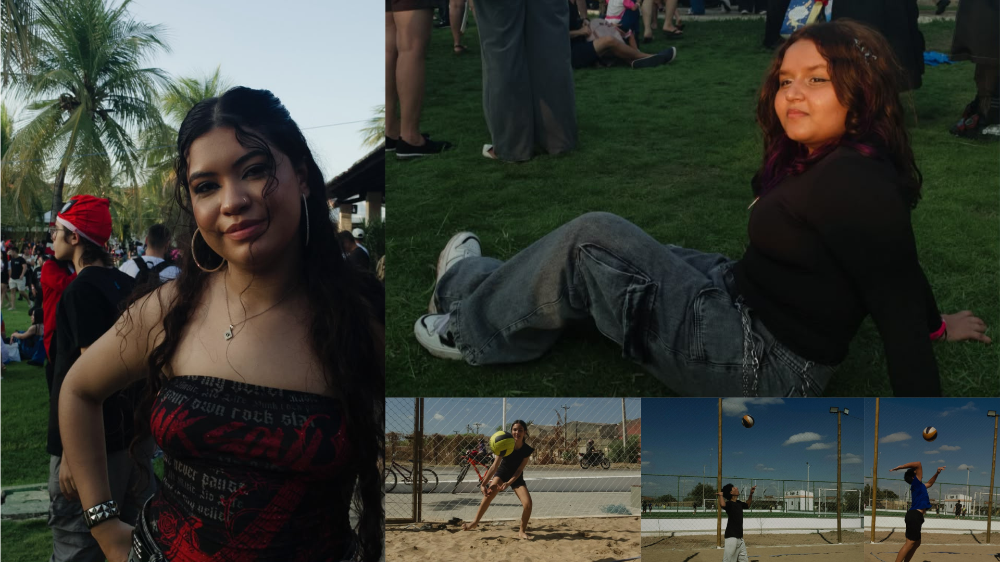
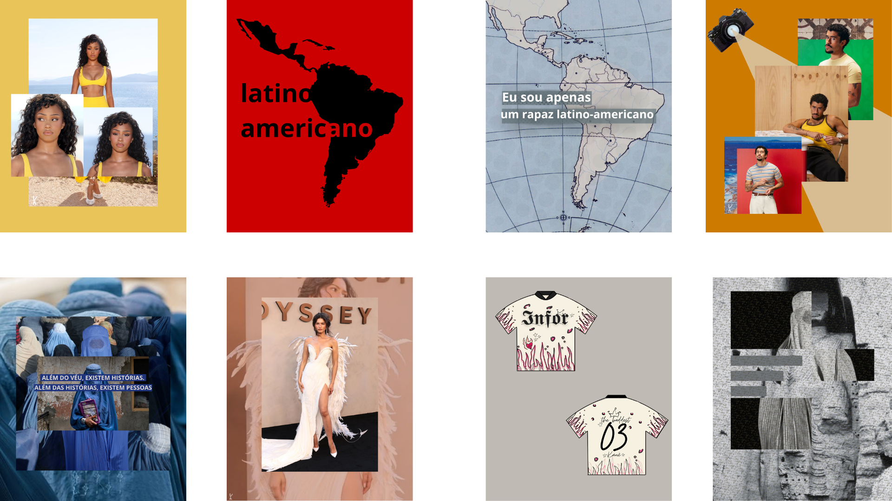
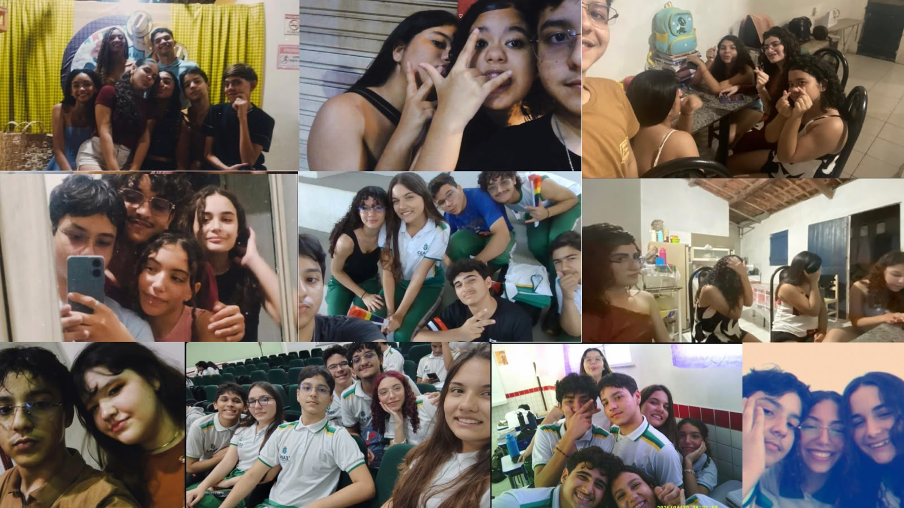

𝐊𝐚𝐮𝐞̂."The baddest bitchs ain't in LA"
Olá sou Kauê, estudo na EEEP Jeová Costa Lima. meu sonho era fazer enfermagem desde os 9/10 anos, porém em junho de 2025 aos 14 anos eu me apaixonei por um estilo musical que é muito popular principalmente pela estética, com isso me interresei mais pelo design grafico e entendi que o que eu fazia a muitos anos era design, então conversando com os meus pais decidi ir para informática.
Meu interesse por tecnologia surgiu através de videos no youtube sobre gadgets, o Fred de ICarly e através do PicArts aonde fazia e ainda faço várias montagens e designs.
Minha maior experiência nesse mundo da tecnologia definitivamente é a EEEP, porém ja tive uma experiência anterior com programção em um curso de criação de jogos por programação em bloco.
O design grafico e crição de sites definitivamente são as áreas que mais me interresam.Atualmente estou aprendendo portugol,html e css.
Meus objetivos profissionais envolvem uma região de liderança, criatividade e visuais.Pretendo ser designer grafico para grandes artistas do mundo da música e diretor criativo e/ou perfomance.
O nível profissional que pretendo alcançar é de referencia no meu ramo.
Coisas sobre mim:
Tiro fotos.

Coisas sobre mim:
Faço designs.

Coisas sobre mim:
Tenho amigos.
